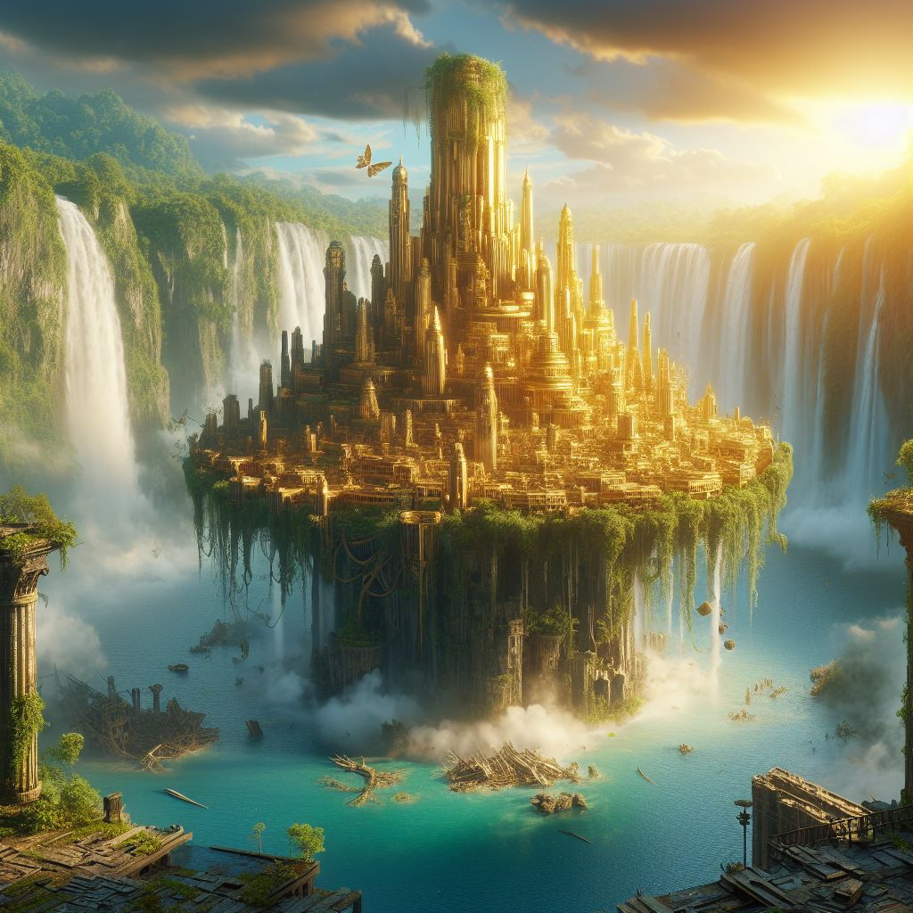
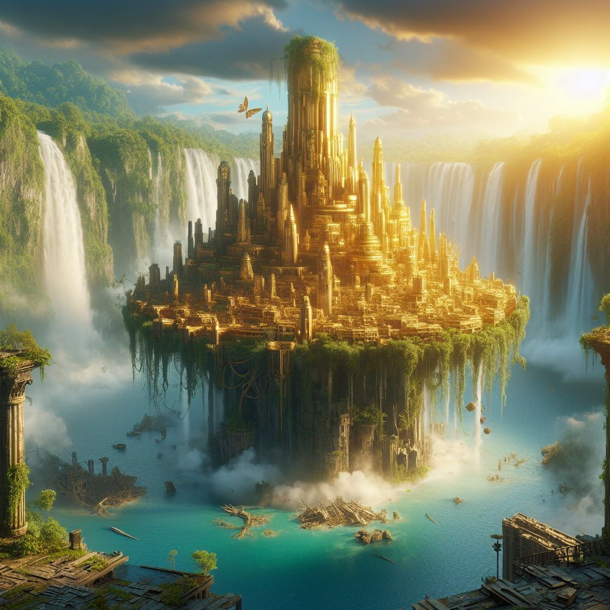

The Lost City
 

Orazca,
the Golden City
Character Level: 8-10
Playtime (Hours): 3-4
Recommended number of players: 4
Difficulty: Hard
Captian Lannery Storm has assigned your pirate crew to investigate the map held in the clutches of a merfolk traitor said to lead to the legendary Golden City of Orazca. Ancient dinosaurs, immortal vampires, and the dangers of the jungle bar your way to treasure. Who knows what dangers await those who trespass on the ancient city?